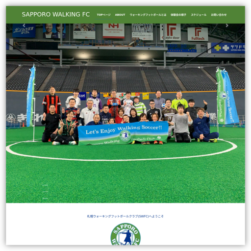

制作実績：SAPPORO WALKING FC

SAPPORO WALKING FC
プロジェクト概要
札幌で活動するウォーキングフットボールチーム「SAPPORO WALKING FC」のWebサイトを制作しました。
ウォーキングフットボールは走ることを禁止したサッカーで、年齢や体力に関係なく楽しめるスポーツです。
サイトの目的
札幌で活動するSAPPORO WALKING FCの認知度向上と、新規メンバーの獲得を目的としています。
ウォーキングフットボールの魅力を伝え、参加へのハードルを下げることを重視しました。
ターゲット
- ウォーキングフットボールで健康的な活動をしたい方
- ウォーキングフットボールに興味がある方
- 札幌でスポーツコミュニティを探している方
- 年齢を問わずサッカーを楽しみたい方
デザインコンセプト
年齢層の幅広いターゲットに配慮し、見やすさとわかりやすさを重視。
スポーツらしい爽やかさと、コミュニティの温かみを表現しています。
工夫したポイント
- レスポンシブデザイン：スマートフォンでの閲覧体験を最適化
- アクセシビリティ：様々な年代に配慮した文字サイズと色彩設計
- 情報設計：初心者でも理解しやすい情報構成
- 更新性：管理者がイベント情報を簡単に登録できるプラグインを使用
技術的な取り組み
WordPressをベースとしたCMS構築により、管理者が自身で情報更新できる仕組みを構築。
成果と学び
Webサイト公開後、道内新聞やテレビ、雑誌などでURLが紹介される機会が増え、サイト経由の体験参加者が増加しました。
この経験を通じて、ユーザーのニーズ把握や情報発信の重要性、そしてWordPressカスタマイズの実践力を高めることができました。